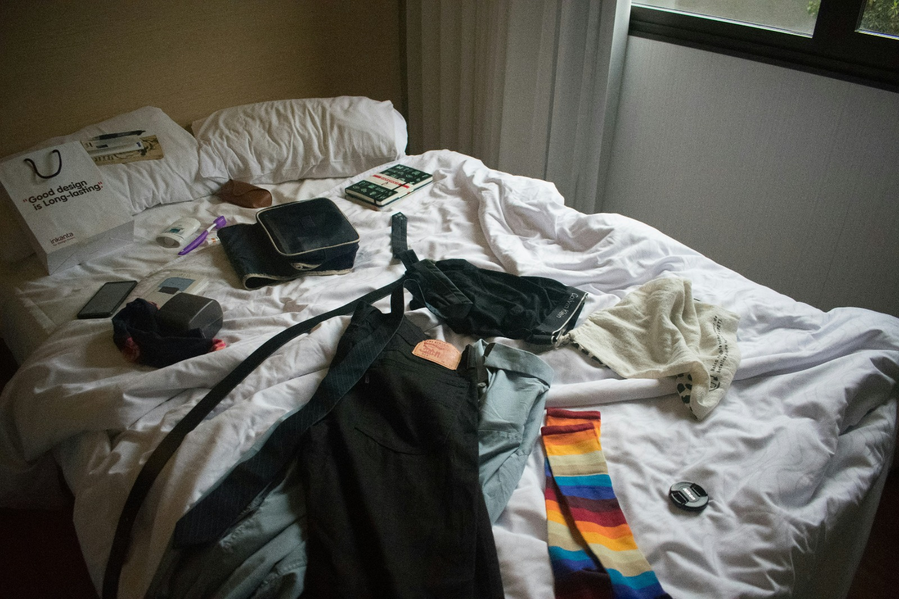
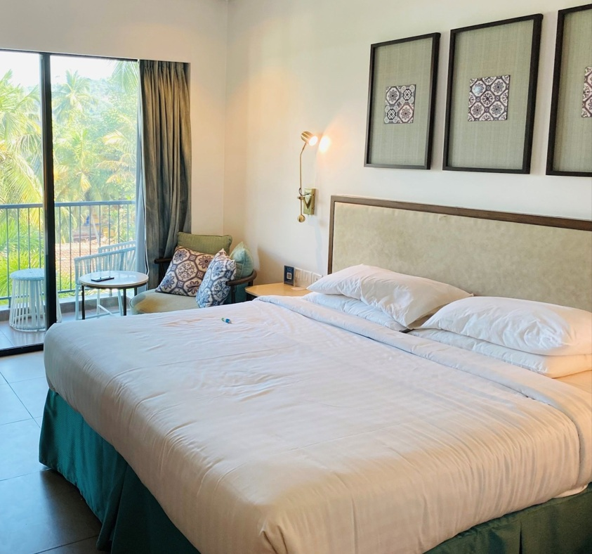
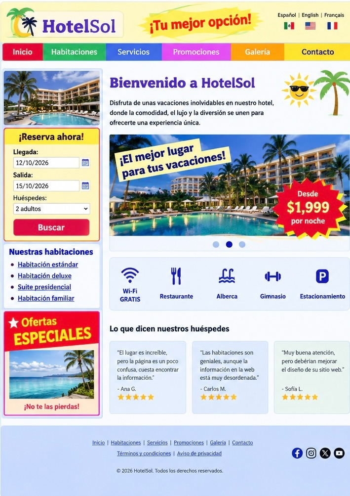
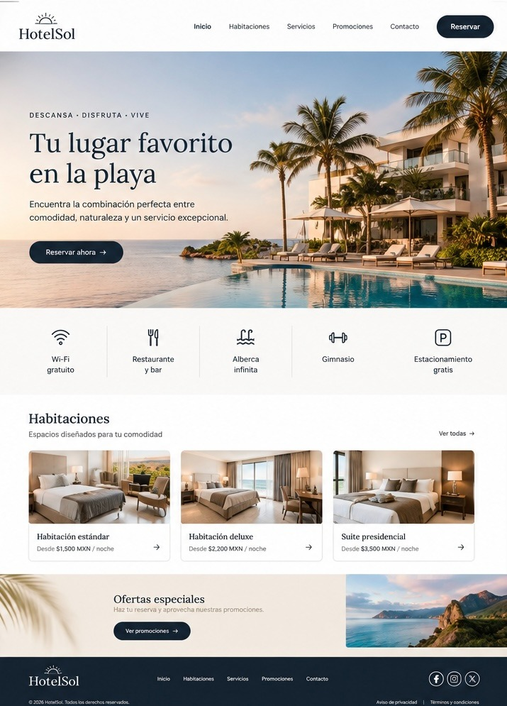

Sin orden ni estética adecuada= mala experiencia

STORYTELLING DEL DISEÑO VISUAL WEB
Como el diseño visual puede mejorar la experiencia de los visitantes en los hoteles y en las páginas web.
En cambio, cuando todo está ordenado y limpio, es más fácil encontrar lo que necesitas y disfrutar de tu experiencia o estancia. Lo mismo sucede con un sitio web: primero debe existir orden y claridad; después, una estética agradable y coherente con la identidad de marca y, finalmente, los elementos necesarios para que el usuario pueda navegar y realizar sus actividades de manera fácil y cómoda, tal como un huésped en un hotel.
Imagina entrar a una habitación donde hay ropa por todas partes, los objetos están fuera de lugar y no encuentras lo que necesitas. Aunque tengas todo a tu alcance, el desorden dificulta su uso. Además, si no tiene una estética agradable resulta menos acogedora.


Una página web funciona de manera similar a una habitación. Si tiene demasiados elementos,y desordenados, el visitante puede perderse. En cambio, cuando la información está organizada y el diseño es coherente, navegar resulta más sencillo.
Información dispersa, diseño saturado y navegación confusa pueden generar una mala experiencia para el usuario.

Información clara, identidad visual coherente y navegación sencilla facilitan la búsqueda y comprensión del contenido.

Esta comparación permite comprender que el diseño visual no consiste únicamente en crear páginas bonitas. También implica facilitar su uso, considerando los siguientes puntos:
Así como una habitación organizada mejora la estancia, un sitio web bien diseñado visualmente mejora la experiencia de navegación. La clave está en combinar estética, orden y funcionalidad para asegurar una visita más confortable para los internautas y los huéspedes.